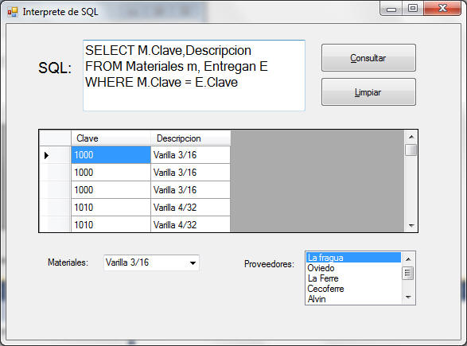

Laboratorio 10: Aplicación cliente- servidor "Visor de BD"

En esta práctica desarrollaremos una interfaz en
C#.Net, que nos permita realizar consultas SQL
mediante la utilización de una caja de texto y recupere la información
de una base de datos que se encuentra almacenada en un servidor SQL
Server.

A modo de referencia, incluimos los esquemas de las tablas que creaste en la práctica anterior y que serán con las que trabajaremos en esta práctica:
Materiales(Clave,Descripción,Costo,PorcentajeImpuesto)
Proveedores(RFC,RazonSocial)
Proyectos(Numero,Denominacion)
Entregan(Clave,RFC,Numero,Fecha,Cantidad)
Construcción del intérprete SQL
Crearemos un pequeño intérprete de SQL, por medio de refinamientos sucesivos.
Nuestra interfaz será desarrollada en C#.Net. A diferencia de las prácticas anteriores ahora nos conectaremos a una base de datos que se encuentra en SQL Server, lo que representa que ahora crearemos un librería para poder posteriormente reutilizar este código en otros proyectos.
En la forma Form1 del proyecto, realiza los siguientes cambios:
En las propiedades de la forma, cambia:
(Name) : Interprete
Text: Intérprete de SQL
(Name): gridResultados
EditMode: EditProgramatically(Name): txtSentencia
Multiline: True
(Name): btnConsultar
Text: Consultar
En la sección general de la clase (en la parte de hasta arriba) agrega las siguiente librería al proyecto:using System.Data.SqlClient;
Agrega una clase al proyecto al que llamarás Util.cs y agrega el siguiente código . Se recomienda que lo introduzcas por tu cuenta, ya que al hacerlo podrás entender internamente cómo estará implementado cada método los cuales serán constantemente utilizados en otros proyectos.
// Agregar estas librerias using System.Data; using System.Data.SqlClient; using System.Windows.Forms; namespace Lab10_VisorBD { class Util { // La conexión que va a utilizar para comunicarse con la base de datos static SqlConnection connection; /* ---------------------------------------------------------------------------------------------------- Crea una conexión con el servidor pasado como parámetro utilizando el nombre de usuario y password pasados como parámetro y se conecta al catálogo pasado como parámetro. @param servidor El servidor al que se va a conectar @param catalogo El catalogo al que se va a conectar @param user El nombre de usuario con el que te conectas @param pass El password del usuario ---------------------------------------------------------------------------------------------------- */ public static void createConnection(String servidor,String catalogo,String user,String pass) { connection = new SqlConnection(); // Obtenemos el string con el wizard data\new datasource de .net String strConexion = @"Data Source=" + servidor + ";Initial Catalog=" + catalogo + ";Persist Security Info=True;User ID=" + user + ";Password=" + pass; connection.ConnectionString = strConexion; } /* -------------------------------------------------------------------------------------------------------- Muestra en pantalla una ventana de dialogo con el ícono de critico con el mensaje pasado como parámetro @param msg Mensaje a mostrar en la pantalla. -------------------------------------------------------------------------------------------------------- */ public static void msgError(String msg) { MessageBox.Show(msg, "Error de ejecucución", MessageBoxButtons.OK, MessageBoxIcon.Error); } /** ------------------------------------------------------------------------------------------------------ Esta función utiliza la conexión abierta para realizar el query pasado como parámetro y regresa un DataTable con los datos leídos @param query El query que se va a ejecutar en la base de datos @return Un DataTable con los datos leídos de la base de datos al ejecutar el query ------------------------------------------------------------------------------------------------------ **/ public static DataTable getData(String query) { SqlCommand command = new SqlCommand(); SqlDataAdapter adapter = new SqlDataAdapter(); DataTable table = new DataTable(); try { connection.Open(); command.Connection = connection; command.CommandText = query; adapter.SelectCommand = command; adapter.Fill(table); connection.Close(); if (table.Rows.Count > 0) return table; else return null; } catch (SqlException ex) { msgError("No se puede ralizar el query <getData>" + Environment.NewLine + "Error: " + ex.Message); table = null; return table; } finally { connection.Close(); } } /* '--------------------------------------------------------------------------------------------------------- Llena el ComboBox pasado como parámetro con los datos que se recuperan del query pasado como parámetro. El ComboBox se va a llenar mediante su ValueMember y su DisplayMember con la primera y segunda columna regresadas del query respectivamente. @param lst El ComboBox que se va a llenar con los datos del query @param query El query que se quiere ejecutar en la base de datos. El query debe tener la forma SELECT INTEGER, $ FROM Tabla [...] en donde $ es un dato de cualquier tipo. -------------------------------------------------------------------------------------------------------- */ public static void fillList(ComboBox lst, String query) { try { DataTable table; table = getData(query); lst.DataSource = null; lst.Items.Clear(); lst.DataSource = table; if (table.Columns.Count == 2) { lst.ValueMember = table.Columns[0].ToString(); lst.DisplayMember = table.Columns[1].ToString(); } else { lst.DisplayMember = table.Columns[0].ToString(); } } catch (Exception ex) { msgError("No se puede llenar el control - fillList <comboBox>" + Environment.NewLine + "Error: " + ex.Message); } } /* -------------------------------------------------------------------------------------------------------- Llena el ListBox pasado como parámetro con los datos que se recuperan del query pasado como parámetro. El ListBox se va a llenar mediante su ValueMember y su DisplayMember con la primera y segunda columna regresadas del query respectivamente. @param lst El ListBox que se va a llenar con los datos del query @param query El query que se quiere ejecutar en la base de datos. El query debe tener la forma SELECT INTEGER, $ FROM Tabla [...] en donde $ es un dato de cualquier tipo. -------------------------------------------------------------------------------------------------------- * */ public static void fillList(ListBox lst, String query) { try { DataTable table; table = getData(query); lst.DataSource = null; lst.Items.Clear(); lst.DataSource = table; if (table.Columns.Count == 2) { lst.ValueMember = table.Columns[0].ToString(); lst.DisplayMember = table.Columns[1].ToString(); } else { lst.DisplayMember = table.Columns[0].ToString(); } } catch (Exception ex) { msgError("No se puede llenar el control - fillList <listBox>" + Environment.NewLine + "Error: " + ex.Message); } }
Util.createConnection(@"siqueiros.qro.itesm.mx\siqueiros", "tu-catalogo", "tu-usuario", "tu-password");Si tienes problemas con SQLServer puedes consultar:
SQLServer Habilitar Servicio
String query; query = txtSentencia.Text; gridResultados.DataSource = Util.getData(query);Con lo que getData recuperará los datos de la base de datos y llenará el grid con los resultados.
La aplicación que creamos es un sencillo intérprete de SQL desde una aplicación de escritorio. Para utilizarlo, escribe en la caja de texto la sentencia SELECT que desees ejecutar.
En principio, el intérprete no está protegido contra errores, por lo que si escribes una sentencia inválida, incurrirá en un error de tiempo de ejecución y terminará la aplicación.
Para manejar los errores, modifica el evento click del botón, del siguiente modo:String query; try { query = txtSentencia.Text; gridResultados.DataSource = Util.getData(query); } catch (Exception ex) { Util.msgError("Error: " + ex.Message); }Fíjate en el Try - Catch. Ahí podemos ver cómo utilizar el código de error y el mensaje de error para mostrar información un poco más específica sobre qué error sucedió.
Prueba nuevamente el intérprete y observa su comportamiento ante diferentes errores en las sentencias:
- Tablas no existentes
- Columnas no existentes
- Columnas ambiguas
- Errores de sintaxis
Intenta validar los errores más comunes (que no se pueda conectar a la base de datos, que una tabla no exista) .
Anexa al reporte tus observaciones.
1) Agrega y codifica un botón para limpiar la caja de texto y el grid de tu aplicación.2) Agrega un comboBox y un listBox y posteriormente en el evento load, agrega el código necesario para que el comboBox muestre los materiales existentes y el listBox muestre los proveedores.
3) Modifica las propiedades del grid, para que no se encuentre en modo de edición, es decir, que solo muestre el resultado de la consulta.
Al final tu aplicación debe tener una apariencia como la siguiente:


La calificación de esta actividad es de
carácter individual.
Envía el laboratorio por este medio , archivo lab10 + matricula.zip.